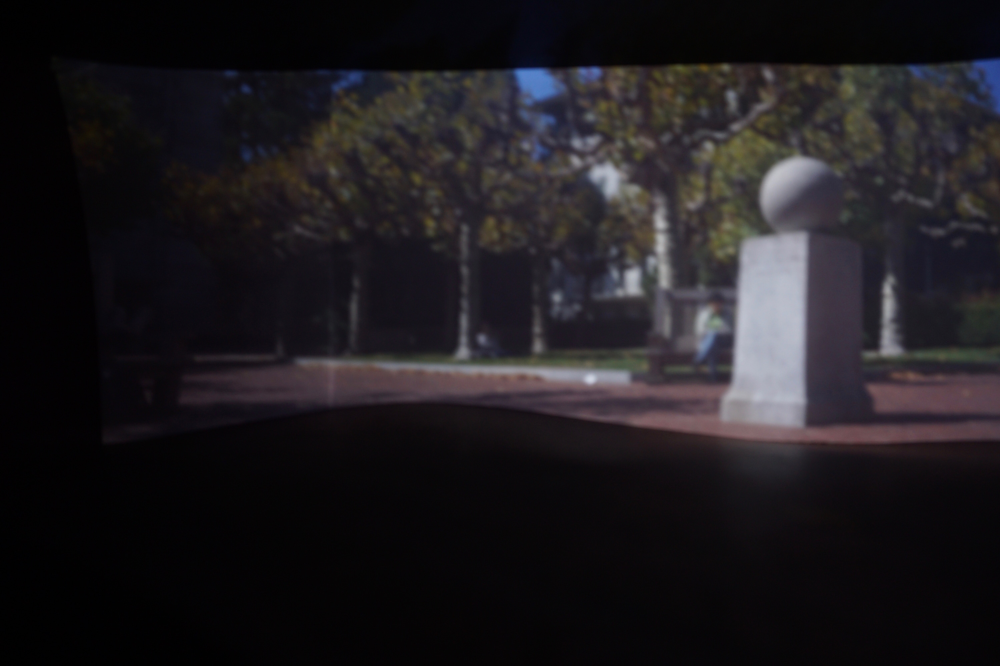
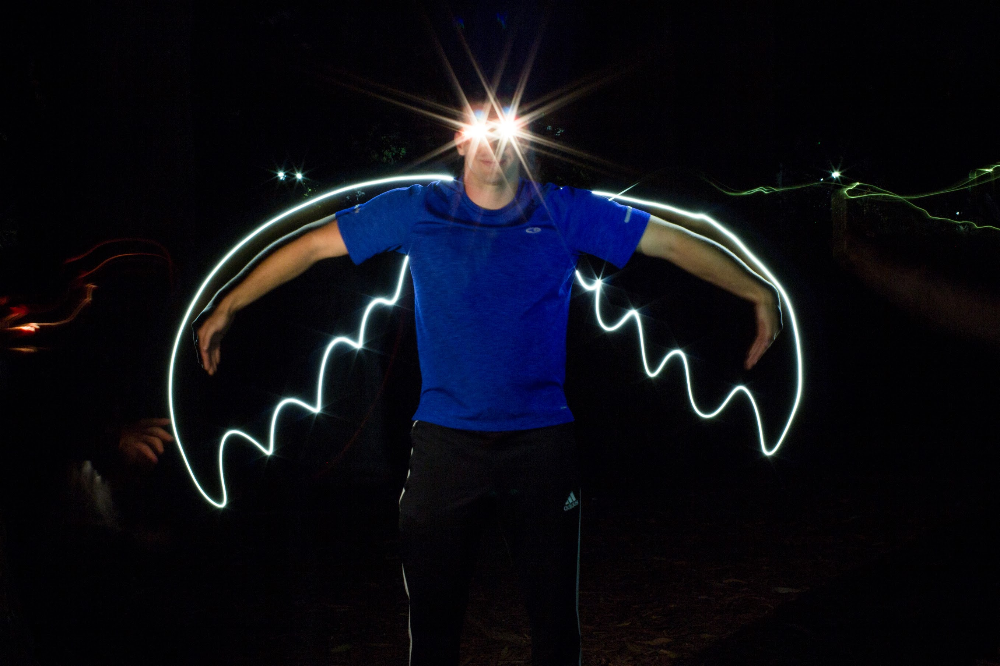

In this project, we created a pinhole camera, also known as a camera obscura. This consists of a box with a single pinhole on one side, and a screen on the other side. Light travels through the pinhole and is "projected" onto the screen on the opposite side of the inside of the box. because of the way light travels, this results in an upside down and backwards image that is perfectly focused at all places. Because we did not have photopaper, and because it would be very difficult to place this paper without exposing it and then later develop it, we instead just took a picture of the screen.
Our overall design of our pinhole camera was quite simple. The base of our camera obscura used a shoebox to block out the light. We cut two holes in the shoebox, one for the digital camera lens and one for the pinhole. We lined all of the inside faces of the shoebox with black posterboard (except for the back face, which we lined with white to be the screen), to prevent miscellaneous light reflections that were not on the screen. On small pieces of black posterboard, we made four pinholes of different sizes: .1mm, 1mm, 3mm, 5mm. These pinhole pieces of posterboard covered up one of the openings to only allow light into the box from the hole. We were able to easily switch out the different pinhole sizes because we used duct tape that would just line the edge of the pinhole paper. This made it easy to peel on filter off and quickly stick another on. The digital camera lens was inserted into the second opening, and duct tape flaps lined the rest of the opening to make the camera opening lightproof. Finally, duct tape was used on all of the corners and edges of the shoebox to ensure that the entire box was lightproof except for the pinhole (at first we used about 3 layers of duct tape for each edge but we realized that wasn't enough so we ended up using 5-6 layers on each edge). Below are pictures of the design:
| Camera Obscura Design Pics | ||
|---|---|---|
| Our box, our pinhole filters are on the top of the box. | We used a duct tape roll to position the camera nicely when taking our pictures. | This is where we would place our pinhole filter. |
Below are our resulting pictures taken with our very own camera obscura. There are two series of four pictures, where each of the four pictures was taken with a different sized pinhole (.1mm, 1mm, 3mm, 5mm). Then, there are four pictures taken of other objects using the pinhole that yielded the best result (1mm).
| Andrew against Doe | |||
|---|---|---|---|
| Pinhole size: 5mm, Shutterspeed: 15sec | Pinhole size: 3mm, Shutterspeed: 30sec | Pinhole size: 1mm, Shutterspeed: 30sec | Pinhole size: 0.1mm, Shutterspeed: 90sec |
| For all the other photos there was no evidence of light leaking in, but this photo showed us that we still had a small issue with light leaking! | |||
| Campanile Ball | |||
|  | |||
| Pinhole size: 5mm, Shutterspeed: 15sec | Pinhole size: 3mm, Shutterspeed: 30sec | Pinhole size: 1mm, Shutterspeed: 90sec | Pinhole size: 0.1mm, Shutterspeed: 150sec |
| Extra Pictures | |
|---|---|
| Pinhole size: 1mm, Shutterspeed: 60sec | Pinhole size: 1mm, Shutterspeed: 60sec |
| Andrew and Patrick! | |
| Pinhole size: 1mm, Shutterspeed: 60sec | Pinhole size: 1mm, Shutterspeed: 60sec |
| Patrick stood next to the trash can for 30 seconds and then left creating this cool translucent effect. | This picture of Sproul was taken at 5pm when everyone was leaving class. The plaza was completely filled with people when we took the picture but thanks to a long exposure it looks completely empty! |
| Pinhole size: 0.1mm, Shutterspeed: 150sec | Pinhole size: 1mm, Shutterspeed: 60sec |
| This was a picture of some artwork on a parking lot wall. | |
| Pinhole size: 1mm, Shutterspeed: 60sec | Pinhole size: 1mm, Shutterspeed: 60sec |
| This was a shot that we took of a tree with the camera pointed straight up. It's really cool how vibrant the blue is. | Another picture of Sproul, this time including the (really far away) campanile. Again this was taken during a rush hour but it looks completely empty thanks to the long exposure! |
Overall, the pictures turned out pretty well. As we expected, the larger the pinhole, the blurrier the images tended to be. However, with a larger pinhole, the shutter speed could be much shorter because there was more light. The 1mm pinhole seemed to work best for us because it still maintained a very clear image, and the shutter speed was not as obnoxiously long as the .1mm pinhole (we had more light to work with). One of the hardest problems for us was keeping the digital camera focused on the screen on the back wall of the camera obscura. Since we needed to manually focus the lens and then insert it into the shoebox, the insertion sometimes made the lens focus less than ideal. Inserting the lens into the shoebox also occasionally displaced the duct tape flaps in such a way that a tiny bit of light came in, thus resulting in a poorer image because not all of the light came from the pinhole.
We implemented the light painting. To do this we needed a digital camera with a long shutter speed (10-30 secs), a dark location, and some sort of bright light (we used phone flashlights). As the camera was taking the picture, we drew an image while pointing the flashlight(s) at the camera so that the picture would record the light trail. We then used the remaining time to illuminate whatever people we wanted to be in the picture with the flashlight(s). This resulted in cool light paintings. We got more adventurous and included multiple people painting and included in a single picture. Special shoutout to Michelle Tian, Maria Can, and Diyar Aniwar for helping paint and starring in the photos.
| Light Paintings | |||
|---|---|---|---|
|  | |||
| Andrew with an A | Batman | Dinosaur | Iron Man |